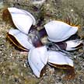
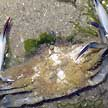
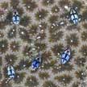
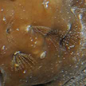
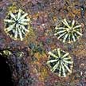
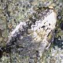

|
|
|
|
|
|
| To
about 1 cm across. Conical shell made up of plates. Commonly seen
on boulders on many of our shores usually crowded in lower portions
and shaded crevices. Also on living crabs and living snails. |
0.5-1cm
across. Flatter shell forms star-like rays where it attaches to the
rock. Operculum conical and protrudes from the opening. Usually found
higher up on rocks and walls in small crowded clusters. |
To
about 3cm across. Tall conical shells not made up of plates, with
a ridged texture, small shell opening operculum recessed. On large
boulders. |
|
|
|

Stalked barnacles
Lepas sp.
|

Parasitic barnacles
Thompsonia sp.
|

Coral barnacles
Pygoma sp.
|

Sponge barnacles
Membranobalanus longirostrum
|
|
| About
2cm. Usually attached to hard surfaces that float in the open sea,
and rarely found on the shore. Shells thin made up of several plates,
on a leathery stalk. Sometimes seen on large objects that have been
floating in the open sea. |
Barnacle
is invisible, but eventually produces tiny egg sacs that emerge through
the joints of the infected crab. Infected crabs sometimes seen on
our Northern shores. |
Tiny
slits (0.2cm) sometimes blue on the surface of hard corals. Sometimes
seen on our Southern shores. |
Tiny
feet (0.5cm long) with white spots, sticking o ut of holes in the Chocolate sponge. Sometimes
seen on some of our shores. |
|

Limpets
Phylum Mollusca |
|

Oysters
Phylum Mollusca
Family Ostreidae |
|
|
| Also
found on rocks, near barnacles. These are snails that can move around
at high tide. |
These
are snails that settle inside shells occupied by a hermit crab. |
These
are bivalves that settle on rocks. |
These
are bivalves that settle under stones, on mangrove tree trunks and
leaves. |
|